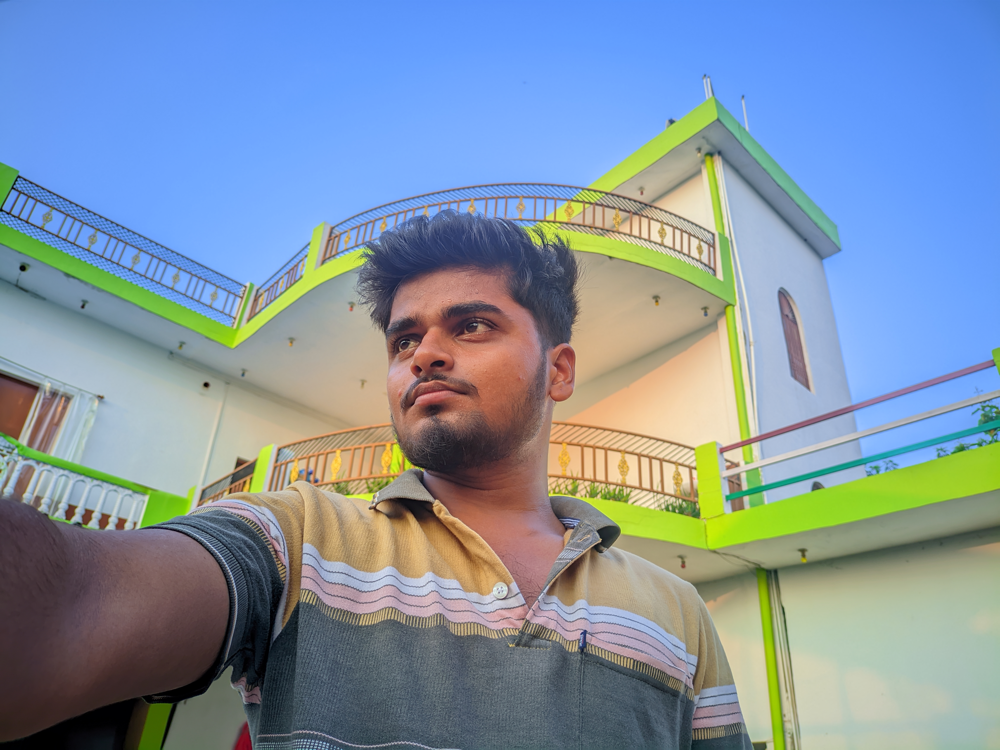

"Apne ghar ke saamne khada insaan hamesha apni mehnat aur sapno ka saboot hota hai. Ye tasveer ek nayi shuruaat aur apnapan ki kahani bayan karti hai."

"Apne ghar ke saamne khada insaan hamesha apni mehnat aur sapno ka saboot hota hai. Ye tasveer ek nayi shuruaat aur apnapan ki kahani bayan karti hai."
Ek raat ek baat likhunga, khud ko daag aur tujhe Chaand likhunga! Mughe pata hai tu mughe Nahi melegi!! Phor bhi teri khubsurati par Ek kitaab Likhunga
Yadon mein teri "Yaad" thi kya "yad" thi kuch "yad" nhi Teri "yad" mein sab bhul gye kya bhul gaye kuch "yad" nahi!! Bas "yad" ho tum sirf "yad" ho tum kyu "yad" ho tum kuch "yad" nahi
"मरने से पहले कम से कम हमें, हर उस जगह लौटना चाहिए… जहाँ छोड़ आए थे हम अपना कोई साथी, कोई चीज़, कोई किस्सा, या फिर अपना ही कोई हिस्सा।"
इश्क में बरबाद हमने जवानी देखी है और इश्क में घर से भागना है तो सिच समझ के भागना मेरे दोस्त हमने कठघरे में बदलती रानी देखी है